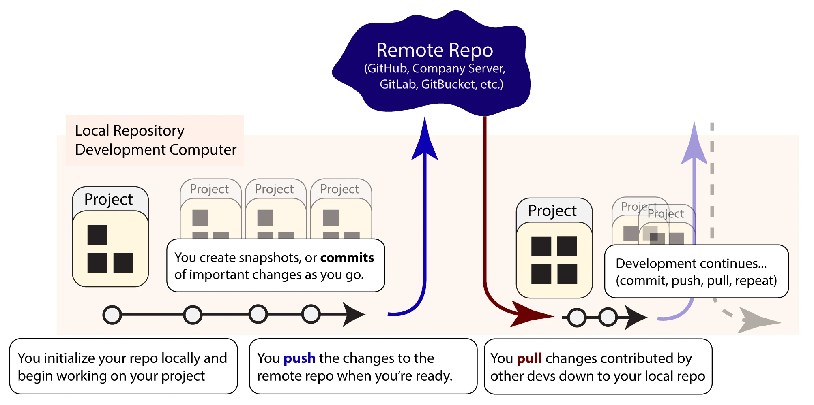
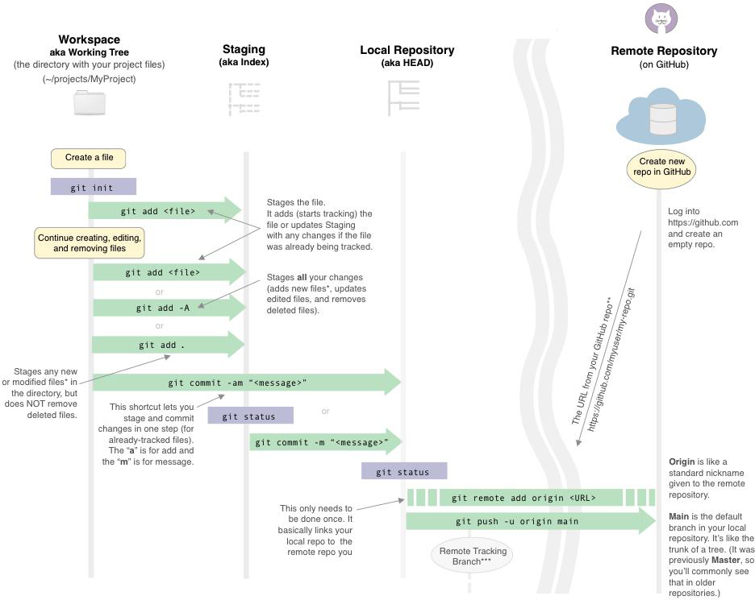
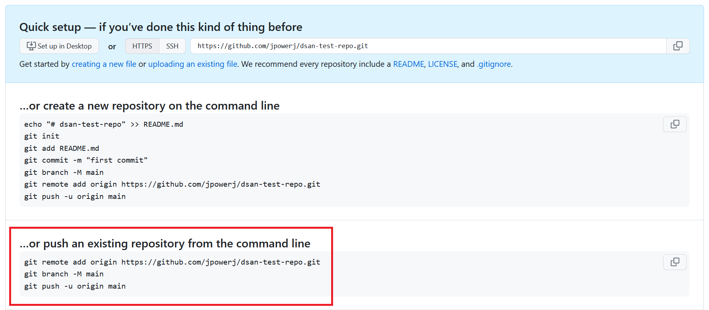
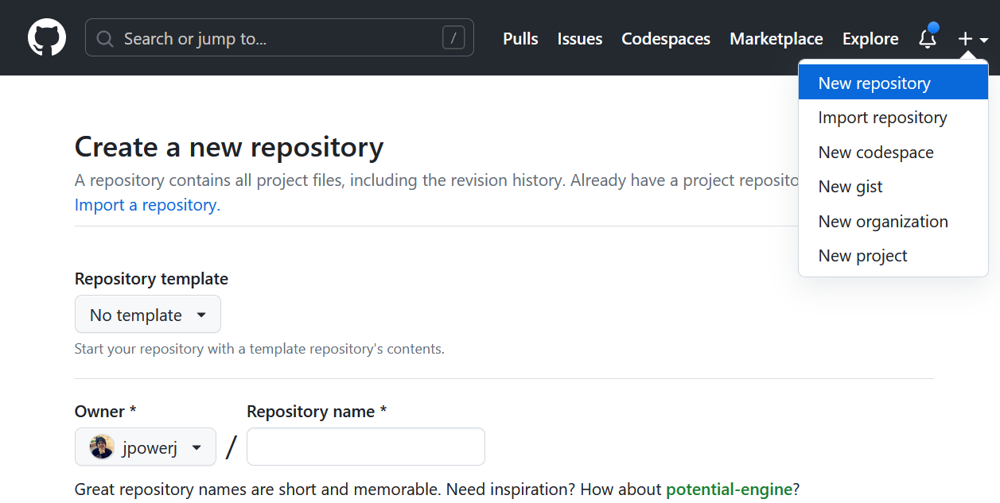
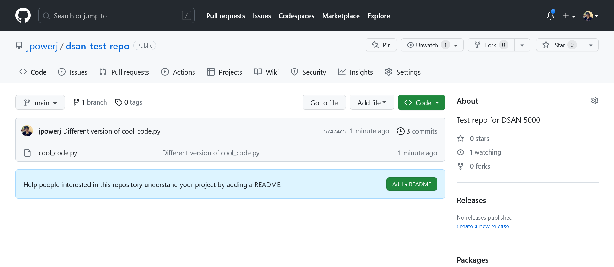
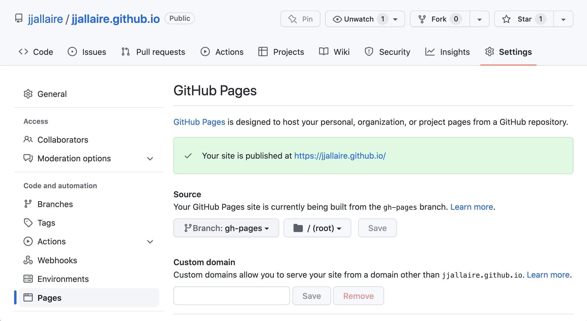
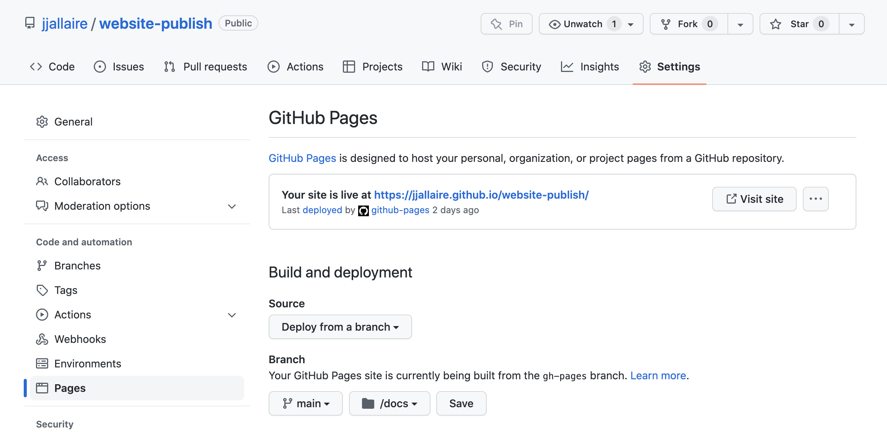
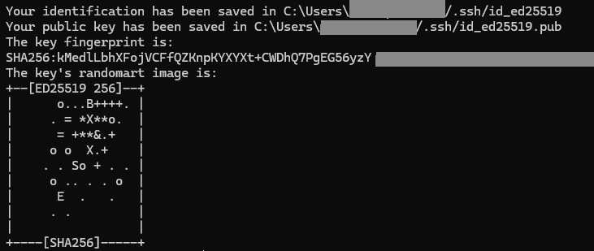

4 Version Control: Mastering the Foundation of Collaborative Development
4.1 Introduction
Version control is one of the most critical skills you’ll develop as an educator building course materials and supporting student projects. Whether you’re managing a single syllabus, collaborating on curriculum development with colleagues, or maintaining course repositories for students to learn from, version control systems provide the backbone for organizing, tracking, and sharing your work.
In this chapter, we’ll explore what version control is, why it matters for educational contexts, and how to use Git and GitHub effectively in your teaching practice. By the end of this chapter, you’ll understand not just how to use these tools, but why they matter and how to teach them to your students in a meaningful way.
4.2 Why Git matters for a Quarto course
If a Quarto course is a publishing project, Git is the memory of that project. It records how the course changes: when a lab was revised, why an assignment was clarified, which screenshots were replaced, and how the published site relates to the source files that generated it.
This matters because course materials are not static. They evolve before the semester, during teaching, and after student feedback. Git gives that evolution a structure:
.qmdfiles hold the readable course source- images and data live in predictable folders
_quarto.ymldefines the book structure- commits explain meaningful changes
- branches make experiments safe
- GitHub backs up the work and makes collaboration visible
The practical goal is simple: the repository should be the source of truth for the course, not a temporary staging area before uploading files somewhere else.
4.3 What Is Version Control?
At its heart, version control is a system that tracks changes to files over time. Imagine editing a Word document and having the ability to see every modification made, by whom, when, and why. Now imagine being able to instantly revert to any previous version if something goes wrong, or merge changes from multiple people working simultaneously. That’s what version control does.
For educators, version control offers several powerful benefits:
Collaboration Made Simple: Multiple instructors can work on the same curriculum without overwriting each other’s changes. Each person’s contribution is tracked independently, and conflicts are resolved systematically.
History and Accountability: Every change is recorded with metadata—who made it, when, and optionally, why. This creates a complete audit trail of how your course materials evolved over semesters.
Experimentation Without Fear: Create branches to try new teaching approaches or reorganize content without affecting the main course materials. If an experiment doesn’t work out, you simply discard the branch. If it’s successful, you merge it back.
Backup and Recovery: Your materials are stored both locally on your computer and in the cloud. If your laptop crashes, your entire course history is safe. If you accidentally delete something, you can recover it from any previous commit.
Sharing with Students: Version control demonstrates professional development practices to your students. When your course materials are in a public or classroom repository, students can see how professional developers organize, document, and collaborate on projects.
4.3.1 Knowledge Check
Before proceeding, consider these questions:
If you checked any of these boxes, version control will solve these problems for you.
4.4 Understanding Git: The Version Control System
Git is a distributed version control system created by Linus Torvalds in 2005. Unlike older centralized version control systems, Git allows every contributor to have a complete copy of the project history. This makes it resilient, flexible, and perfect for both individual projects and large collaborative efforts.

4.4.1 The Core Concept: Commits
The fundamental unit of version control in Git is the commit. A commit is a snapshot of your files at a specific point in time, accompanied by a message describing what changed. Think of commits like chapters in a book—each chapter marks a milestone in the story, and you can always reference any chapter by name.
When you create a commit, you’re essentially saying: “I’ve made these specific changes, and here’s why.” This creates a chain of events that represents the entire development history of your project.
4.4.2 Local vs. Remote Repositories
Git operates on two levels:
Local Repository: This is the version control database on your computer, usually hidden in a .git folder. When you work on files, make changes, and commit them, you’re working with your local repository.
Remote Repository: This is a copy of your repository hosted on a server (like GitHub, GitLab, or Bitbucket). It serves as a central hub for collaboration and backup.
When you’re ready to share your work or collaborate with others, you push your local commits to the remote repository. When teammates make changes, you pull their commits to update your local copy.
4.4.3 The Three States of Git
Understanding Git’s three states is crucial:
Modified: You’ve changed a file, but you haven’t committed the change yet. The file exists only on your computer.
Staged: You’ve marked a modified file to be included in the next commit. This is the staging area or “index”—a holding area where you prepare files before committing.
Committed: The file is securely stored in your local Git database with all the metadata about what changed and who changed it.
This three-state system gives you fine-grained control. You can modify multiple files, stage only some of them, commit them with a meaningful message, then move on to the next set of changes.
4.5 Setting Up Git for Your Teaching Environment
4.5.1 Installation and Configuration
Git is available for Windows, macOS, and Linux. Most systems come with Git pre-installed, but if you need to install it:
- Windows: Download from git-scm.com
- macOS: Install via Homebrew (
brew install git) or download from git-scm.com - Linux: Use your package manager (
apt-get install git,yum install git, etc.)
Once installed, configure Git with your identity:
git config --global user.name "Your Full Name"
git config --global user.email "your.email@example.com"This information appears in every commit you make, so choose values you’re comfortable sharing with colleagues and students.
4.5.2 Workbook Exercise: Configure Your Git Environment
Take a moment to configure Git on your machine if you haven’t already:
Task: Open your terminal/command prompt and run the configuration commands above with your actual name and email.
# Step 1: Verify Git is installed
git --version
# Step 2: Configure your user name
git config --global user.name "Your Full Name"
# Step 3: Configure your email
git config --global user.email "your.email@example.com"
# Step 4: Verify your configuration
git config --listVerification Checklist: - [ ] Git is installed and version is displayed - [ ] No errors when running configuration commands - [ ] git config --list shows your name and email - [ ] You can see user.name and user.email in the output
If you encounter any issues, note them below and we’ll address them:
My Git configuration status: _________________________________
4.6 Creating Your First Repository
A repository is a directory where Git tracks all the files and their history. For course development, the recommended path is to create the repository on GitHub first, clone it locally, and then add the Quarto structure inside that cloned folder.
This is cleaner than building a local folder first because the remote repository, local folder, README, .gitignore, and collaboration settings all agree from the beginning.
4.6.1 Recommended Course Workflow: GitHub First
- Create a new repository on GitHub.
- Add a
README.md. - Add a Python
.gitignore. - Clone the repository locally.
- Pull once before adding files.
- Add the Quarto project structure.
- Commit and push.
git clone https://github.com/username/my-course.git
cd my-course
git pull
quarto create project website .
git add .
git commit -m "Initialize Quarto course site"
git push4.6.2 When to Use git init
git init is still useful when you already have an existing local folder and need to start tracking it. For new courses, use the GitHub-first workflow above. If you do need to initialize an existing local folder, run:
cd /path/to/your/course/folder
git initThis creates a hidden .git folder (you might need to enable viewing hidden files in your file manager) that stores all version control information.
4.6.3 Cloning a Repository: git clone
Cloning creates a local copy of a GitHub repository, including its history and remote connection:
git clone https://github.com/username/repository-name.gitFor course development, this should usually happen before you create the Quarto site.
4.6.4 Workbook Exercise: Create and Clone Your Course Repository
Choose one of your courses and create a new GitHub repository for it.
Task: Create the repository remotely, clone it locally, and pull before adding content.
# Clone the repository you created on GitHub
git clone https://github.com/username/my-course.git
cd my-course
# Pull before adding course files
git pull
# List files and hidden Git metadata
ls -la # On macOS/Linux
dir /a # On Windows (Command Prompt)
Get-ChildItem -Force # On Windows (PowerShell)Verification Checklist: - [ ] GitHub repository created - [ ] Repository cloned locally - [ ] git pull runs without errors - [ ] Hidden .git folder is visible - [ ] Repository is ready for Quarto files
Document your result:
My GitHub repository URL: _________________________________
My local repository location: _________________________________
4.7 Understanding the Git Workflow
The typical Git workflow follows this sequence: Modify → Stage → Commit → Push.
Let’s explore each step in detail.
4.7.1 Step 1: Creating and Modifying Files
Start by creating or editing files in your repository. This might be adding a new syllabus, updating reading materials, or creating assignment prompts. Git doesn’t care what you’re working on—it just tracks changes to text-based files.
Git works best with text-based files like: - Markdown files (.md, .qmd) - Source code (.py, .js, .R) - Configuration files (.yml, .json) - Plain text documents
Binary files (like .docx, .xlsx, .pdf) can be tracked, but Git can’t show you what changed between versions—it only knows the files are different.
4.7.2 Step 2: Checking Status with git status
Before committing, check what has changed:
git statusThis command shows you: - Untracked files: New files Git hasn’t seen before - Modified files: Files that have changed since the last commit - Staged files: Changes ready to be committed
The output might look like:
On branch main
Changes not staged for commit:
modified: syllabus.md
modified: course_outline.md
Untracked files:
new_file: assignment_template.md4.7.3 Step 3: Staging Changes with git add
Once you’re happy with your changes, stage them for commit:
# Stage a single file
git add syllabus.md
# Stage multiple files
git add syllabus.md course_outline.md
# Stage all changes
git add .Staging is like selecting files you want to include in a package before sending it. You might have made changes to ten files, but you only want to commit five of them together because they represent a single logical change.
4.7.4 Step 4: Committing with a Meaningful Message
Now commit your staged changes:
git commit -m "Update syllabus with new learning objectives and grading breakdown"The message should be clear and descriptive. Good commit messages help future you and your collaborators understand why changes were made, not just what changed. The Git history becomes a narrative of your course’s evolution.
Guidelines for good commit messages: - Start with a verb in the imperative mood: “Add”, “Update”, “Fix”, “Remove” - Keep the first line under 50 characters - Add more details in the message body if needed (separated by a blank line) - Explain the why, not the what (Git shows the what)
Examples:
❌ Poor:
"changes to syllabus"
"fixed stuff"
"more updates"✓ Good:
"Update grading policy to clarify participation points"
"Add learning objectives aligned with program outcomes"
"Reschedule midterm to accommodate accreditation visit"4.7.6 Workbook Exercise: Your First Commit
Create a simple course material file and make your first commit.
Task: Complete the workflow
# Create a new file
echo "# Course Syllabus
## Course Title: Your Course Name
## Term: Spring 2026
" > syllabus.md
# Check the status
git status
# Stage the file
git add syllabus.md
# View what's staged
git status
# Commit with a message
git commit -m "Add initial course syllabus"
# View the commit history
git log --onelineVerification Checklist: - [ ] File syllabus.md created successfully - [ ] git status shows the file before staging, then staged - [ ] Commit created with your message - [ ] git log shows your commit with the message
Document your experience:
First commit message: _________________________________ Any challenges encountered: _________________________________
4.8 Viewing History and Understanding Commits
As your repository grows, you’ll want to review what you’ve done and why.
4.8.1 Viewing the Commit Log
# Basic log view
git log
# Condensed one-line view
git log --oneline
# Show more details about each commit
git log -pThe log shows the commit hash (unique identifier), author, date, and message. This history becomes invaluable when you need to understand how your course materials evolved.
4.8.2 Examining Specific Changes
# See what changed in the most recent commit
git show HEAD
# See what changed in a specific commit
git show <commit-hash>
# Compare two commits
git diff <commit-hash1> <commit-hash2>4.9 Branching: Experimenting Safely
One of Git’s most powerful features for educators is branching. A branch is an independent line of development—a copy of your main materials where you can make changes without affecting the original.
4.9.1 Why Branches Matter for Teaching
Imagine you want to try redesigning your course for the fall semester while the spring semester is underway. Rather than disrupting your current course materials, you create a branch called fall-2026-redesign. You work on this branch, making significant changes, reorganizing modules, and updating content. If it looks great, you merge it back into your main course. If it doesn’t work out, you simply abandon the branch.
Similarly, you might use branches for: - Experimental teaching approaches: try-active-learning, test-flipped-classroom - Collaborative work: One branch per instructor’s assignment - Version management: spring-2026, fall-2026 - Bug fixes or improvements: fix-assignment-rubric, update-videos
4.9.2 Creating and Switching Branches
# Create a new branch (based on current branch)
git branch fall-2026-redesign
# Switch to that branch
git checkout fall-2026-redesign
# Or create and switch in one command
git checkout -b fall-2026-redesign
# List all branches
git branchWhen you switch to a new branch, the files in your directory update to reflect that branch’s state. Your work on other branches doesn’t interfere.
4.9.3 Merging Branches Back
Once your experimental branch is working well, merge it back into your main course materials:
# Switch to main
git checkout main
# Merge the branch
git merge fall-2026-redesignGit automatically combines the changes. If there are conflicts (both branches changed the same line), Git will prompt you to resolve them.
4.9.4 Workbook Exercise: Create and Experiment with Branches
Let’s practice creating and merging branches.
Task: Create a branch and make an experimental change
# Create a new branch for experimenting with content
git checkout -b experiment-interactive-content
# Modify a file (or create a new one)
echo "## Interactive Module Ideas
- Incorporate more live coding demos
- Add breakout discussion prompts
- Create peer review assignments
" >> syllabus.md
# Stage and commit on the branch
git add syllabus.md
git commit -m "Add notes on interactive content ideas"
# Switch back to main without merging
git checkout main
# Verify you're back on main (the file should be unchanged)
git status
# Look at your experiment branch
git checkout experiment-interactive-content
git log --oneline
# Switch back to main
git checkout main
# Now merge the experimental branch
git merge experiment-interactive-content
git log --onelineVerification Checklist: - [ ] Branch experiment-interactive-content created - [ ] Changes made and committed on the branch - [ ] Able to switch between main and branch - [ ] Files update correctly when switching branches - [ ] Branch merged successfully into main - [ ] Changes from branch appear in main
Reflection:
What would you use branches for in your teaching? _________________________________
4.10 GitHub: Taking Your Repository to the Cloud
GitHub is a web-based platform that hosts Git repositories. It adds collaboration, sharing, and visibility on top of Git’s core functionality.
4.10.1 Why GitHub for Education
GitHub provides several features that enhance teaching:
- Visibility: Share course materials with students, colleagues, or the public
- Collaboration: Students and colleagues can contribute directly to projects
- Issues and Discussions: Organize feedback, bugs, and feature requests
- GitHub Classroom: Automated assignment distribution and collection for students
4.10.2 Creating a GitHub Account and Repository
- Visit github.com and create a free account
- After signing in, click the “+” icon in the top right and select “New repository”
- Name your repository (e.g.,
spring-2026-course-materials) - Add a description
- Choose to make it public or private
- Initialize with a README
- Add a Python
.gitignore - Click “Create repository”

4.10.3 Cloning Your GitHub Repository Locally
After creating the repository on GitHub, clone it before adding Quarto files:
git clone https://github.com/your-username/repository-name.git
cd repository-name
git pullNow your local course folder is already connected to GitHub. Add the Quarto structure here, then commit and push.
4.10.4 AD688-Style First Repository Pattern
In AD688, the first repository is not treated as a throwaway Git exercise. It is the student’s durable workspace for the course. That changes the emphasis: students configure their identity, connect their editor, verify authentication, make a small README change, commit, push, and submit the repository link.
Use this pattern when introducing GitHub to students:
- Create a GitHub account with a name and email the instructor can recognize.
- Enable two-factor authentication.
- Create a course repository using the required naming convention.
- Clone the repository in VS Code or from the terminal.
- Add or edit
README.md. - Commit with a meaningful message.
- Push to GitHub.
- Refresh the GitHub page and verify the commit appears.
- Submit the repository URL through the LMS.
The point is to make GitHub feel like the normal place where course work lives, not an extra upload step at the end.



4.10.5 GitHub Pages as a Course Publishing Target
For portfolio-style assignments or small public course sites, GitHub Pages can publish a repository directly. In an education workflow, this works best after students already understand commits and pushes.
Two common patterns are:
- a user site repository named
yourusername.github.io - a project site that publishes from a
docs/folder or configured branch

username.github.io convention.
docs/.4.10.6 SSH Keys for GitHub
HTTPS cloning is often enough for a first course repository. SSH becomes useful when students are working repeatedly across a local computer, VS Code, and a cloud machine such as AWS EC2.
Students should understand the difference between the two key files:
| File | Meaning | Share? |
|---|---|---|
id_ed25519 |
private key | Never share or upload |
id_ed25519.pub |
public key | Add to GitHub |
Generate a key:
ssh-keygen -t ed25519 -C "your.email@example.com"Display the public key:
cat ~/.ssh/id_ed25519.pubThen add the public key to GitHub under SSH keys and test:
ssh -T git@github.com
If students later work on EC2, remind them not to place private keys in a Git repository or cloud-synced folder. Authentication files are part of the environment, not part of the assignment.
4.10.7 Connecting an Existing Local Repository
If you already created a local repository with git init, you can still connect it to GitHub:
git remote add origin https://github.com/your-username/repository-name.git
git branch -M main
git push -u origin mainFor new courses, cloning first is usually cleaner.
4.10.8 Workbook Exercise: Create, Clone, and Push
Let’s create the GitHub repository first and then add work locally.
Task: Create and clone a GitHub repository
- Go to github.com and log in
- Create a new repository named
my-course-materials - Choose “Public” so others can see your work
- Initialize it with a README
- Add a Python
.gitignore - Click “Create repository”
Then in your terminal:
# Clone the repository
git clone https://github.com/YOUR-USERNAME/my-course-materials.git
# Enter the local repository
cd my-course-materials
# Pull before adding course files
git pull
# Confirm the remote connection
git remote -vVerification Checklist: - [ ] GitHub account created - [ ] Repository created on GitHub - [ ] Repository cloned locally - [ ] git pull runs cleanly - [ ] Local repository connected to GitHub - [ ] Files pushed successfully - [ ] Able to see files on github.com in your browser
Your GitHub repository URL:
https://github.com/YOUR-USERNAME/my-course-materials
4.11 Collaboration: Working with Others
Version control really shines when multiple people work on the same project. Let’s explore the common collaboration patterns you’ll use.
4.11.1 The Fork and Pull Request Workflow
The most common way to collaborate on open-source projects—and increasingly in education—is through pull requests:
- Fork: Create your own copy of someone else’s repository
- Clone: Download the fork to your computer
- Branch: Create a branch for your changes
- Commit: Make your changes and commit them
- Push: Upload your branch to your fork
- Pull Request: Request that the original repository accept your changes
- Review: The maintainer reviews and discusses your changes
- Merge: If approved, your changes are merged into the main project
4.11.3 Handling Conflicts
Sometimes two people modify the same file, creating a conflict. Git is transparent about this:
git merge other-branch
# If there's a conflict, Git tells you which files have conflictsOpen the conflicted file and you’ll see markers:
<<<<<<< HEAD
This is what you had
=======
This is what they changed
>>>>>>> other-branchResolve the conflict by keeping the correct version (or a combination), then:
git add .
git commit -m "Resolve merge conflict in syllabus.md"4.11.4 Workbook Exercise: Practice Conflict Resolution
Scenario: You and a colleague both updated the same file. Let’s simulate this and resolve the conflict.
# Create a file that will have a conflict
echo "## Course Grading Scale
A: 90-100
B: 80-89
C: 70-79
D: 60-69
F: Below 60
" > grading.md
git add grading.md
git commit -m "Add initial grading scale"
# Create a branch to simulate colleague's changes
git checkout -b colleague-updates
# Edit the file (colleague's version)
echo "## Course Grading Scale
A: 92-100
B: 83-91
C: 74-82
D: 65-73
F: Below 65
" > grading.md
git add grading.md
git commit -m "Update grading scale with +/- modifiers"
# Switch back to main and make different changes
git checkout main
echo "## Course Grading Scale
A: 90-100
B: 80-89
C: 70-79
D: 60-69
F: Below 60
Plus: Extra credit can add up to 2 points
" > grading.md
git add grading.md
git commit -m "Add extra credit option"
# Now try to merge—this will create a conflict
git merge colleague-updatesVerification Checklist: - [ ] Conflict marker displayed in grading.md - [ ] Able to identify both versions - [ ] Resolved conflict by choosing a final version - [ ] Committed the resolution successfully
Reflection:
How would you handle this situation in real collaboration with a colleague? _________________________________
4.12 Best Practices for Version Control in Education
4.12.1 Commit Frequently
Don’t wait until the end of the semester to commit changes. Small, frequent commits are easier to understand and revert if needed. Think of commits as saving chapters of your course’s story.
For Quarto course development, commit when the course reaches a coherent state:
- a chapter renders cleanly
- a new lab has its data, screenshots, and instructions
- a figure or table now comes from source code instead of manual copying
- the navigation in
_quarto.ymlchanges - the rendered
_bookoutput has been rebuilt and checked
4.12.2 Write Clear Commit Messages
Your future self will thank you. A good message explains why a change was made:
❌ "fix"
✓ "Adjust assignment deadline to accommodate accreditation visit"
❌ "updates"
✓ "Add learning outcomes for Module 3 aligned with program assessment"4.12.3 Use Branches for Major Changes
Never make radical changes directly on main. Use branches to experiment, then merge when you’re confident.
4.12.4 Keep Large Files Out of Git
Git is designed for text-based files. Large binary files (videos, huge datasets) should be stored elsewhere and referenced from your Git repository. Many educators use Git LFS (Large File Storage) or cloud storage services.
4.12.5 Review Before Merging
If working with colleagues, use pull requests to review changes before merging. This creates a record of decisions and catches mistakes early.
4.12.6 Maintain a Good README
Your README.md is the front door to your repository. It should explain: - What the course is about - How to use the materials - How to contribute (for open repositories) - Any technical requirements
For a Quarto course, the README should also explain how to rebuild the course:
quarto renderIf the course uses Python or R dependencies, link to the relevant environment file (requirements.txt, pyproject.toml, renv.lock, or similar). A course is much easier to maintain when a colleague can clone it, install the environment, render it, and understand the folder structure without asking for a private tour.
4.12.7 Workbook Checklist: Set Up Your Teaching Repository
Use this checklist to set up a professional, version-controlled course repository:
Phase 1: Local Setup - [ ] Git installed and configured with your name and email - [ ] GitHub repository created with README and .gitignore - [ ] Repository cloned locally - [ ] git pull runs cleanly before adding course files
Phase 2: Quarto Setup - [ ] Quarto project created inside the cloned repository - [ ] Initial Quarto files committed with a meaningful message - [ ] Initial commit pushed to GitHub - [ ] README.md updated to explain the course
Phase 3: Documentation - [ ] Organized files in logical folders - [ ] Added licensing information (if appropriate) - [ ] Documented any setup instructions for students
Phase 4: Collaboration Ready - [ ] Identified how colleagues/students will access materials - [ ] Set up any necessary collaborators on GitHub - [ ] Created initial branches for experimental features - [ ] Established a branching strategy for your team
Phase 5: Cloud Ready - [ ] Repository can be cloned from a remote machine - [ ] Authentication method is documented: HTTPS, GitHub CLI, or SSH - [ ] Private keys and tokens are excluded from Git - [ ] Students know to commit and push before ending a cloud session - [ ] Repository URL is the primary submission artifact
4.13 Summary: Your Version Control Journey
Version control is no longer optional for educators. Whether you’re managing solo course development, collaborating with colleagues, or teaching students professional practices, Git and GitHub provide the infrastructure for organized, trackable, transparent work.
Key takeaways:
- Git tracks changes: Every modification is recorded with metadata
- Commits tell a story: Your repository documents the evolution of your course
- Branches enable experimentation: Try new ideas safely without affecting production materials
- GitHub enables collaboration: Share and sync work with colleagues and students
- Good practices matter: Clear messages, frequent commits, and thoughtful branching make version control powerful
As you apply these concepts in your teaching, you’re not just managing files—you’re modeling professional development practices for your students.
4.14 Knowledge Check: Verify Your Understanding
Review what you’ve learned in this chapter:
Explain the three states of Git (Modified, Staged, Committed)
What’s the purpose of a branch?
When should you make a commit?
How would you share your course materials with a colleague?
What’s a good commit message, and why does it matter?
4.15 Next Steps
Now that you understand version control, you’re ready to:
- Set up your course repository (see Phase 1-4 checklist above)
- Learn about GitHub Classroom for managing student assignments
- Explore advanced Git features like rebasing, cherry-picking, and hooks
- Teach your students version control as part of your curriculum
Consider dedicating time this week to implementing what you’ve learned. Start with one course or project, get comfortable with the daily workflow, and then expand to other courses.